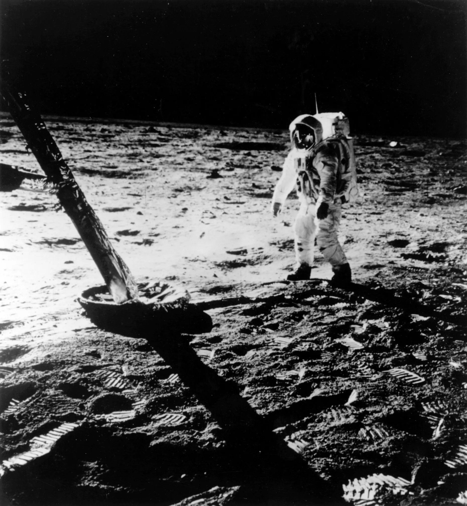
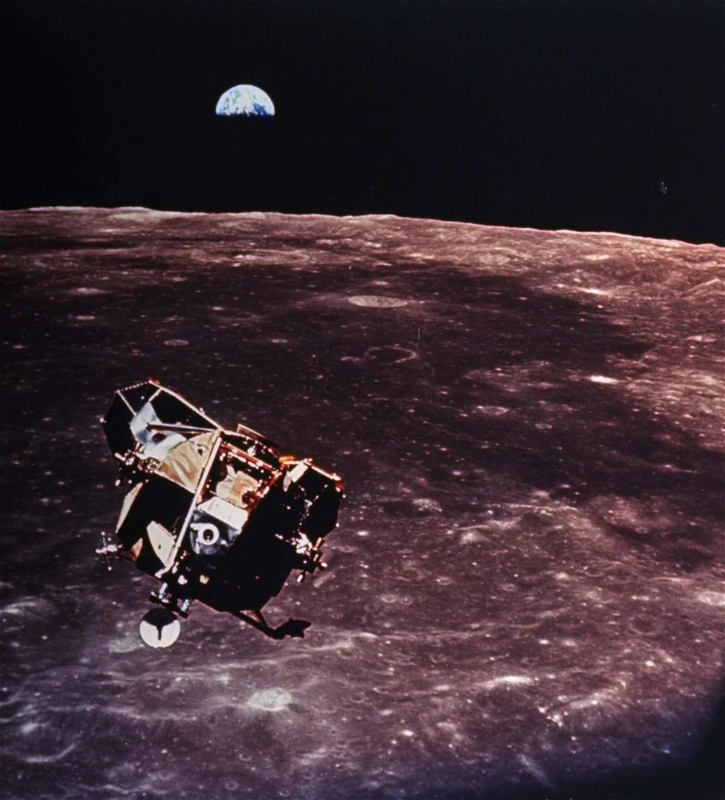

First Moon Landing
On July 20, 1969, Apollo 11 astronauts Neil Armstrong and Buzz Aldrin became the first humans to set foot on the moon.

Launch of Sputnik 1
Launch of Sputnik 1 in 1957 marked the dawn of the space age, propelling humanity into the era of satellite communication and exploration.

Apollo 11 Moon Landing
The Apollo 11 moon landing on July 20, 1969, marked the first time humans set foot on the mo